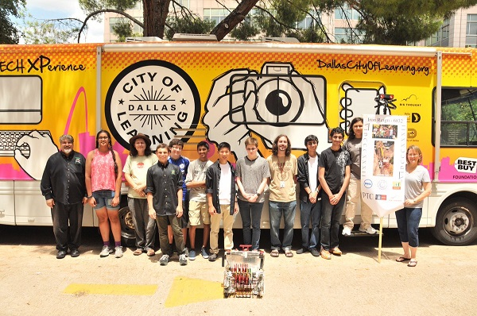

Following the conclusion of the state UIL competition, Iron Reign noticed the Texas Workforce Commission building. Given that the organization was one of the team's generous sponsors, we wanted to show our gratitude and headed into the building. Upon greeting the clerk, we made it apparent that we didn't wish to disturb anybody, but wanted to see if anyone was available from the Commission who we could thank for helping us with FTC. There was an enthusiatic response, as immediately several officials, including Commissioner Ruth Hughs came down to meet with us (I guess we got really lucky with our timing). Upon inquiry, we instantly gave them a brief overview of why we were in Austin (#UIL) and what our team was built on. We spoke on mechanical aspects, such as the robot itself, and also spoke about our several outreach events. We answered questions about FIRST and the general consensus was impressed with the dedication and work we had put into the competition and team. As a tangent to the amount of work we had put into FIRST, Hughs spoke to us about expanding the role of organizing and growing the general workforce. She told us how it was the work of people like us that made her job of organizing us worth it. She also advised we meet with Chairman Andres Alcantar, a big supporter of STEM, as he wasn't in town. After talking about all these topics, we invited the officals to come inside the Mobile Tech Xperience and see what it was like for the kids we taught using the vehicle.Commissioner Hughs visited with the @FIRSTinTexas Robotics @team6832 today to discuss the #UILRobotics #robotroundup pic.twitter.com/ZhOlTngI9h
— TXWorkforce (@TXWorkforce) July 29, 2016
Getting the opportunity to meet with one of the larger organizations in Texas was very educational for us. While we helped the Commission better understand the investment they've made in FIRST, we also learned yet another aspect of our future in the American workforce. The connection we built with the Commission emphasized the role of STEM and robotics in our future. Driving the robot around, while showing off the multiple components on it, we gave the officials plenty to think about in terms of future opportunities. We hope to take the lessons learned at the TWC and use it to build on our future endeavors. Thank you to the TWC for having us! 